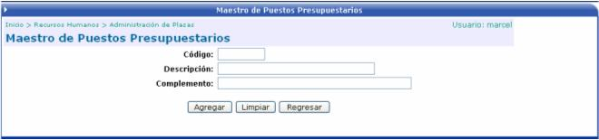

En esta opción se definen los puestos presupuestarios, los cuales van a tener asociado un complemento de cuenta para formar la cuenta contable que se va a ver afectada cuando se utilice ese tipo de puesto:
